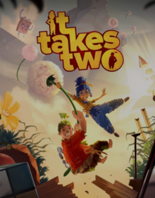

- Year: 2021
- Genre: Action, Adventure, Puzzle, Co-op
- Developer: Hazelight Studios
- Platforms: PC, PlayStation 4, PlayStation 5, Xbox One, Xbox Series X/S
- Awards: Game of the Year (GOTY) 2021
About the Game
It Takes Two is a co-op action-adventure game developed by Hazelight Studios. It follows a couple on the brink of divorce who are transformed into dolls and must navigate whimsical, ever-changing levels to find their way back to their daughter.
Key Features
- Co-op Gameplay: Designed exclusively for two players, either locally or online.
- Dynamic Levels: Each level introduces new mechanics and challenges.
- Emotional Story: A heartfelt narrative about love, relationships, and family.
- Variety of Gameplay: From platforming to puzzles to combat, the game offers diverse experiences.
- Visuals and Sound: A vibrant art style and charming soundtrack enhance the experience.
Why It Won GOTY 2021
- Innovative Co-op: The game's co-op mechanics were praised for their creativity and execution.
- Emotional Impact: The story resonated with players and critics alike.
- Variety and Creativity: The game's constantly evolving gameplay kept players engaged.
- Critical Acclaim: It Takes Two received universal praise and numerous awards.
- Cultural Impact: The game highlighted the importance of co-op experiences in gaming.